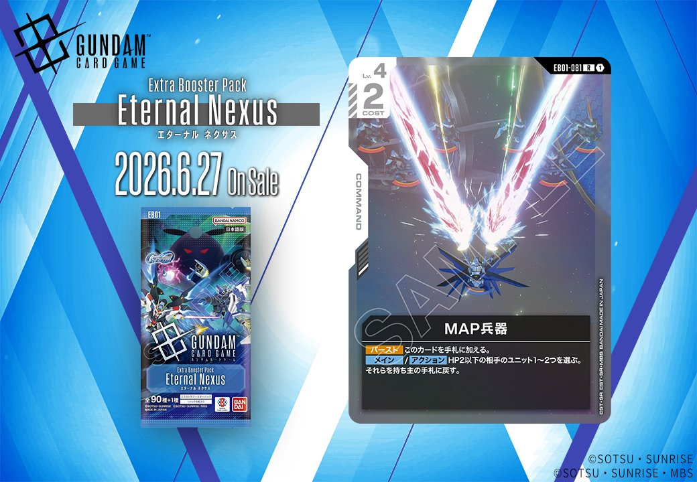
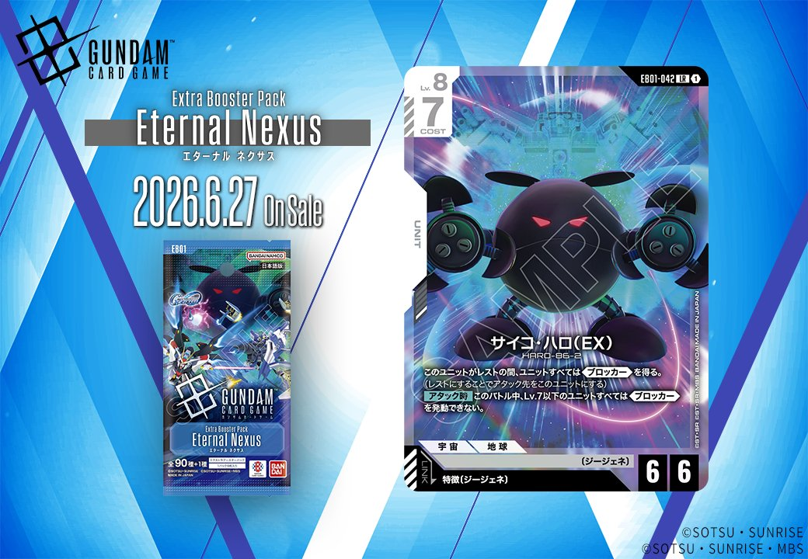
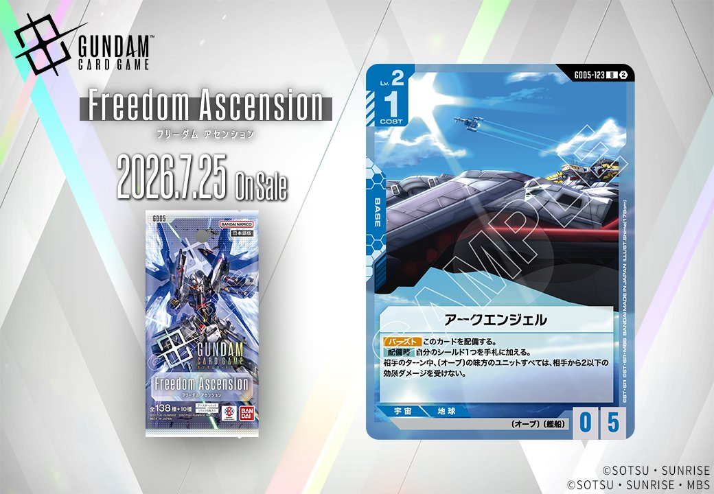
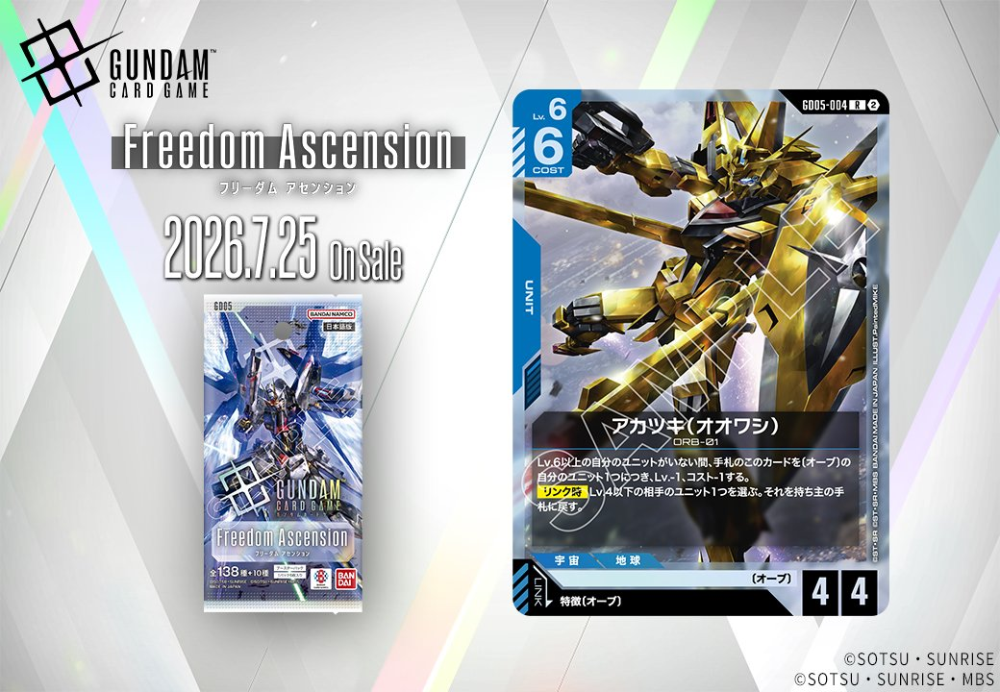

今回は、6月27日発売のEB01「Eternal Nexus」から白のCOMMANDカード「MAP兵器」とUNITカード「サイコ・ハロ(EX)」、そして7月25日発売の「Freedom Ascension」から青のBASEカード「アークエンジェル」とオーブ特徴のPILOTとリンクするUNITカード「アカツキ(オオワシ)」の計4枚を紹介します。

MAP兵器 (EB01-081)
| 色 | 白 | タイプ | COMMAND |
| Lv | 4 | コスト | 2 |
効果: 【バースト】このカードを手札に加える。【メイン/アクション】HP2以下の相手のユニット1～2つを選ぶ。それらを持ち主の手札に戻す。
MAP兵器は、HP2以下の相手ユニットを最大2体まで手札に戻せるコスト2のコマンドカード。序盤に展開された低HPユニットやトークンを一掃できる除去カードで、相手の場を大きく崩せる。 バースト効果で手札に加えられるため、相手ターン中の除去に対応してこのカードを確保し、次の自分のターンで複数除去を狙うプレイが可能。白の防御的な戦術に、能動的な盤面コントロール手段を提供する1枚。

サイコ・ハロ(EX) (EB01-042)
| 色 | 白 | タイプ | UNIT |
| Lv | 8 | コスト | 7 |
| AP | 6 | HP | 6 |
| 特徴 | 〔ジージェネ〕 | ||
効果: このユニットがレストの間、ユニットすべて《ブロッカー》を得る。【アタック時】このバトル中、Lv.7以下のユニットすべては《ブロッカー》を発動できない。
サイコ・ハロ(EX)は、レスト状態で全ユニットに《ブロッカー》を付与しつつ、アタック時にLv.7以下の《ブロッカー》を無効化する特殊な効果を持つ高コストユニット。自身のアタックで相手の既存《ブロッカー》持ちユニット（ガンダム・ルブリスやリック・ディアス等）を無力化できるため、盤面を強引に突破する切り札として機能する。ただしコスト7と重く、自身がレストすると味方も《ブロッカー》を得るため、運用には工夫が必要だ。



アークエンジェル (G005-123)
| 色 | 青 | タイプ | BASE |
| Lv | 2 | コスト | 1 |
| AP | 0 | HP | 5 |
| 特徴 | 〔オーブ〕、〔艦船〕 | ||
効果: 【バースト】このカードを配備する。【配備時】自分のシールド1つを手札に加える。相手のターン中、〔オーブ〕の味方のユニットすべては、相手から2以下の効果ダメージを受けない。
アークエンジェルは青色のベースカードで、配備時にシールド1つを手札に戻しつつ、相手ターン中に〔オーブ〕ユニットへの2以下の効果ダメージを無効化する防御的な効果を持つ。コスト1で配備できる軽さと、手札補充を兼ねた防御効果により、〔オーブ〕を軸としたデッキで序盤から終盤まで活躍が期待できる。2026年7月25日発売予定のFreedom Ascensionで登場する新たな防御拠点として、〔オーブ〕デッキの安定性向上に貢献するだろう。

アカツキ(オオワシ) (6005-004)
| 色 | 青 | タイプ | UNIT |
| Lv | 6 | コスト | 6 |
| AP | 4 | HP | 4 |
| 特徴 | 〔オーブ〕 | ||
| リンク条件 | 特徴にオーブを持つPILOT | ||
効果: Lv.6以上の自分のユニットがいない間、手札のこのカードを〔オーブ〕の自分のユニット1つにつき、Lv.-1、コスト-1する。【リンク時】Lv.4以下の相手のユニット1つを選ぶ。それを持ち主の手札に戻す。
アカツキ(オオワシ)はオーブ特徴を持つユニットが場に複数いるほどコストが軽減される青のユニットで、手札に〔オーブ〕ユニットが3つあれば実質コスト3まで下がる可能性がある。リンク時にLv.4以下の相手ユニットを手札に戻す効果は、序盤から中盤にかけて相手の展開を妨害できるため、オーブ軸のコントロール戦術に適している。ただしLv.6以上の自分のユニットがいるとコスト軽減が無効になるため、このカード自身が最高レベルユニットとして運用される想定のデザインと言える。


関連カード
-
 溢れる慈愛(GD01-118)白系デッキ内採用率39.6% (1260デッキ)
溢れる慈愛(GD01-118)白系デッキ内採用率39.6% (1260デッキ) -
 ガンダム・ルブリス(GD01-086)白系デッキ内採用率37.3% (1186デッキ)
ガンダム・ルブリス(GD01-086)白系デッキ内採用率37.3% (1186デッキ) -
 エールストライクガンダム(ST04-001)白系デッキ内採用率35.7% (1136デッキ)
エールストライクガンダム(ST04-001)白系デッキ内採用率35.7% (1136デッキ) -
 キラ・ヤマト(ST04-010)白系デッキ内採用率35.3% (1123デッキ)
キラ・ヤマト(ST04-010)白系デッキ内採用率35.3% (1123デッキ) -
 リック・ディアス(GD02-079)白系デッキ内採用率29.1% (925デッキ)
リック・ディアス(GD02-079)白系デッキ内採用率29.1% (925デッキ) -
 30cm砲(APFSDS弾)(EB01-084)NEW白系 — 同色・共通特徴: ジージェネ（新カード）
30cm砲(APFSDS弾)(EB01-084)NEW白系 — 同色・共通特徴: ジージェネ（新カード） -
 ヒルドルブ(EB01-052)NEW白系 — 同色・共通特徴: ジージェネ（新カード）
ヒルドルブ(EB01-052)NEW白系 — 同色・共通特徴: ジージェネ（新カード） -
 ギャプランTR-5〔フライルー〕1号機(EB01-054)NEW白系 — 同色・共通特徴: ジージェネ（新カード）
ギャプランTR-5〔フライルー〕1号機(EB01-054)NEW白系 — 同色・共通特徴: ジージェネ（新カード） -
 ホワイトベース(ST01-015)青系デッキ内採用率12.2% (387デッキ)
ホワイトベース(ST01-015)青系デッキ内採用率12.2% (387デッキ) -
 リーンホースJr.(GD04-121)青系デッキ内採用率2.4% (75デッキ)
リーンホースJr.(GD04-121)青系デッキ内採用率2.4% (75デッキ)